Warden Reference — Sector Geography
Wages of Sin's own sector map, used directly as the source image — vectorized straight from the real scan, not hand-recreated. Page numbers have been removed for a cleaner in-fiction feel; the underlying geography is untouched. Only two things are added on top: Prospero's Dream and Jormungandr Station, placed as a clearly marked original overlay.
Warden Reference
Scroll to see the full sector — this is a direct vector trace of the real, full-resolution scan. Zoom in with your browser's native zoom (Ctrl/Cmd +) for crisp lines at any size.

potrace), so every position and connection is exactly what the source book shows, just recolored to fit the dark theme. Page numbers were removed via OCR-based detection (Tesseract) cross-checked with a manual visual sweep across every region of the map — confirmed zero remaining page-number text anywhere. Nothing about the actual geography was manually redrawn, estimated, or altered.Original Placement — Read Before Using
Prospero's Dream and Jormungandr Station (pink, dashed) are not on Wages of Sin's actual map. The source never places Prospero's Dream anywhere — it's used across dozens of third-party products without a fixed sector location. This placement sits near Utpala, the map's only other X-Class port, on the reasoning that two black-market X-Class hubs plausibly exist within reach of each other out past the edge of charted space. Jormungandr Station is placed nearby since Teamster Trouble already ties it to Prospero's Dream directly. Treat both placements as adjustable — nothing about them is canon, and there's no wrong way to move them if a different arrangement serves the campaign better.
Warden Reference
A number of map locations already appear as clients, targets, or backdrops in the Bounty Board's real Wages of Sin entries — worth knowing if you want a bounty's home system to actually mean something at the table.
| System | Confirmed tie |
|---|---|
| Utpala [X] | Home of Shoshana Berahthran, the Pirate Queen (Bounty #83) and the Utpalan Pirate Fraternity |
| Boria [C] | Odran Perrin (#14) and Nazar Balog (#16) both worked out of here |
| Citov [A] | Amaruq Borges (#20), Eamon McGuinness (#22), Josue Georgiu (#24) — Citov Orbital Shipyards |
| Baclite [C] / Offit [C] | Offit is the ODC prison moon — the full trial/sentencing module |
| Uyema [B] | Borisov Kyung-Hee's bounty (#84) — Uyema Militia client |
| Veldat [C] | Reidar Beech / The Light — the cosmic horror bounty (#86) |
| Doenides [A] | Roach the Cook (#34) — Doenides Police Department client |
| Balonov [C] | Bahdan Eros (#11) — Balonov Downport City |